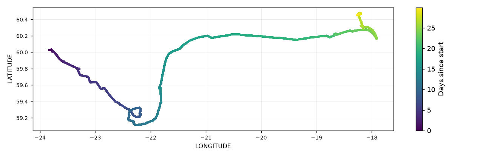

Position and Time Processing#


Overview#
Time (TIME) and position (LATITUDE, LONGITUDE) place every measurement. They are checked first in the pipeline, before any science variable is processed. Processing consists of:
Time filtering on load — records outside the deployment are dropped.
Quality control — impossible dates, impossible positions, positions on land and impossible speeds are flagged.
Interpolation — short gaps in position are filled by linear interpolation in time.
1. Time filtering on load#
Load OG1 removes records whose TIME is outside the deployment window. By default this runs from DEPLOYMENT_TIME (or 1 Jan 1990 if the file has none) to the time the pipeline runs.
- name: Load OG1
parameters:
file_path: glider.nc
filter_bad_time: true # default
data_start: null # default: deployment
data_end: null # default: now
Missing times (NaT) stop the pipeline, and a warning is logged if TIME is not increasing.
If the file has no LATITUDE/LONGITUDE, Prepare OG1 renames them from LATITUDE_GPS/LONGITUDE_GPS (or ALATPT01/ALONPT01) if available.
2. Quality control#
All four tests flag bad values 4 and missing values 9. Default configuration:
- name: Apply QC
parameters:
qc_settings:
impossible date qc: {}
impossible location qc: {}
position on land qc: {}
impossible speed qc: {}
2.1 Impossible date#
Impossible Date QC flags TIME before 1 Jan 1985 or after the current time. It has no parameters.
2.2 Impossible location#
Impossible Location QC flags LATITUDE outside ±90° and LONGITUDE outside ±180°. Each coordinate is flagged on its own. It has no parameters.
2.3 Position on land#
Position On Land QC flags LATITUDE and LONGITUDE together where the position falls on land, using the Natural Earth 1:110m land polygons. Positions very close to the coast can be missed or incorrectly flagged.
2.4 Impossible speed#
Impossible Speed QC flags fixes that imply an impossible horizontal speed. Each fix is compared with the last good fix at least min_interval seconds earlier; if the speed between them reaches threshold, the fix is flagged on TIME, LATITUDE and LONGITUDE.
impossible speed qc:
threshold: 3 # m/s
min_interval: 60 # s
3. Interpolation#
The GPS and science sensors do not sample at the same times, so many samples have no position. The Interpolate Data step fills positions flagged 3, 4 or 9 by linear interpolation in time and flags them interpolated (8).
- name: Interpolate Data
parameters:
variables:
LATITUDE: [3, 4, 9]
LONGITUDE: [3, 4, 9]
Only gaps of up to max_interp_time (5 minutes) between real values are filled. Values before the first or after the last real value are never filled. TIME itself is never interpolated.